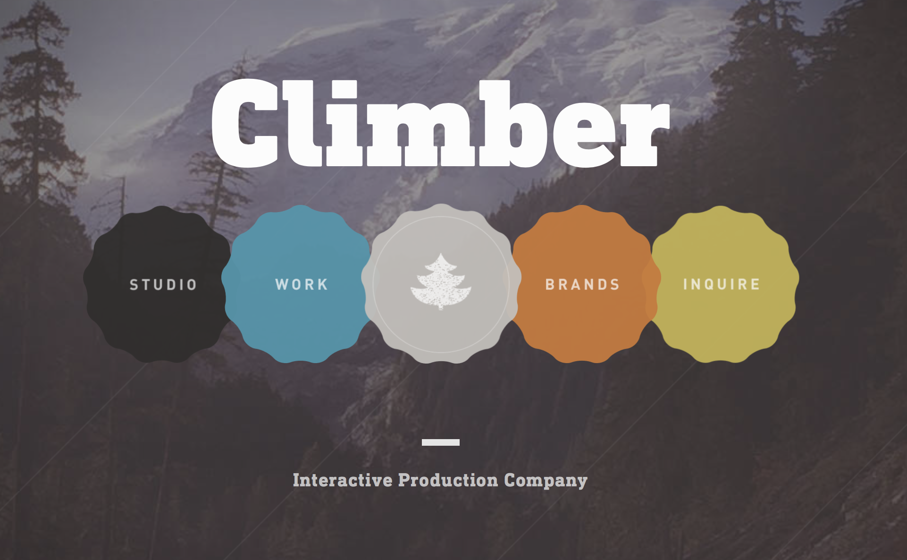

The first good website that I reviewed is called Climber Interactive. Climber interactive is a website that is in the digital marketing, design, and development for gaming, production and outdoor industries. They help create experiences for users as well as products.
So the first thing that caught my eye was that it is a SUPER interactive website. When you first enter the website it has moving objects and backgrounds. The navigation bar is interactive and moves as well. I think having an interactive website really sets this one apart from other websites because it keeps the users eyes in motion and has the user wantihg to click deeper into the website to find out more about the company.
The coding is very modern, neat and easy to track. They are using HTML5 elements. They do not use tables.
At first I was confused on where to go to find out about the company and what they did, but then I went to the Studio navigation tab and it talked about who Climber interactive is, what they do and how long they have been in business. A cool thing about these pages that I discovered was that each page is like a video and there is this moving tree at the bottom of the page you can grab and rewind the page to do the interaction again.
The colors on this site are very consistent throughout. The colors that this company used on their website are Navy blue, green, brown, black, gray, and maroon. These colors give the website a very modern and outdoors kind of look.
This site uses minimal words per page which makes it easier to read and doesn't distract the viewers eyes too much. They have a significant amount of space on each page and have sweet interactions like the tree icon I mentioned in the beginning.
Click here to find out more about Climber Interactive. Climber Interactive.